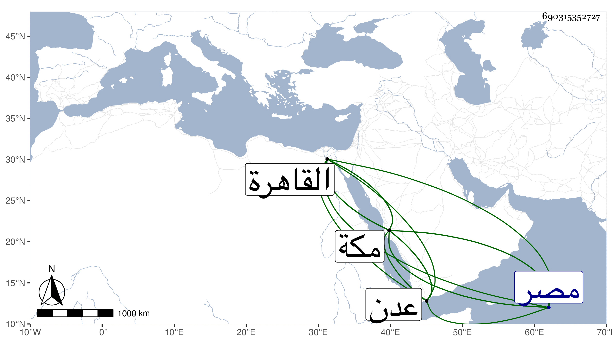

0902Sakhawi.DawLamic.ITO20230111-ara1.EIS1600.690315352727
Biography ID: 690315352727
694
خضر بن إبراهيم بن يحيى خير الدين بن برهان الدين الروكي نزيل القاهرة كان من كبار التجار كأبيه . مات مطعونا في ذي الحجة سنة عشرين . قاله شيخنا في أنبائه ، وذكره الفاسي في مكة فقال الرومي التاجر الكازمي كان ذا ملاءة وافرة سكن مع أبيه عدن عدة سنين ثم انتقل إلى مكة وأحب الانقطاع بها ، ومضى منها إلى مصر وعاد إليها بعد موت أبيه سنة إحدى عشرة واشترى بها ملكا واستأجر وقفا ثم أعرض عن الاقامة بمكة لتعب لحقه بها من جهة الدولة وسكن القاهرة وبها مات في ثالث ذي القعدة ، قال وكان ينطوي على دين وفيه سماح ومجموع مجاورته بمكة تزيد على خمسة أعوام .
